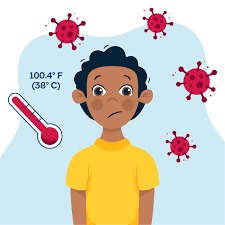

FEVER

Treatment
- Reduce all flu-related illnesses Take licorice and measles, leave a little tap water and drink well-stewed distillate in the morning and evening to reduce fever, cough and all diseases related to fever.
- Fever Take equal amount of Sukku, Pepper and Thippili and mix it with honey and eat it to cure fever.
- Reduce dandruff Put mint powder in coconut oil, boil it and apply it on the scalp.
- Cure rash, scabies Rheumatism and scabies can be cured by rubbing the adjacent ointment in the bath.
- Stop the sputum To cure diarrhea, take curry leaves and mix it with powdered ghee and eat it.